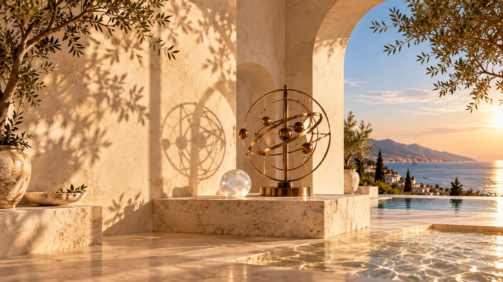
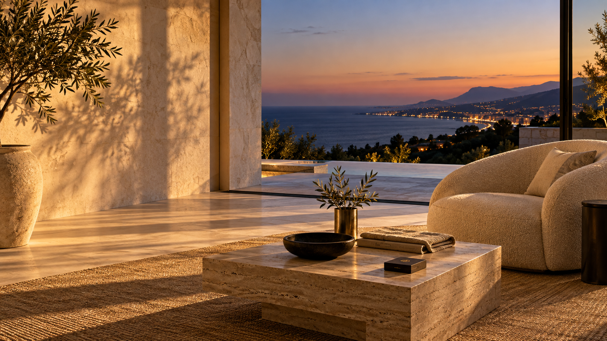

01 · Energy
Settle the system.
Grounding and restorative work when you feel depleted or disconnected.
Costa del Sol · Online worldwide
Energy healing, mindset strategy and intuitive guidance for people who want clear, personal support — without performance, pressure or a one-size-fits-all formula.

Private, personal, intuitively guided
You do not have to arrive with the right words. This is a private place to slow down, talk honestly and work with what is actually present — emotionally, practically and energetically.
One private space. Four ways into the work.
There is no fixed script. Georgia starts with what is happening for you and works from there.
Grounding and restorative work when you feel depleted or disconnected.

Clear conversation for the beliefs and habits that keep repeating.
Mindset, emotion and energy considered as one connected picture.
Tarot and intuitive guidance used for perspective, not prediction.
Energy · Mindset · Alignment · Intuitive Guidance
Choose the closest starting point. Georgia reads every enquiry herself and will tell you if another session would suit you better.
Restoration
Energy Healing
A deeply restorative, private experience designed to help you slow down, reconnect with yourself and create space for greater calm, clarity and balance.
Each session is intuitively guided around what you are experiencing in the present moment and may incorporate energy healing, grounding, breathwork, reflection and gentle energetic practices.
Ideal for feeling emotionally depleted, overwhelmed, disconnected from yourself or simply ready for a reset.
60 min€330
90 min€450
Perspective
Mindset Strategy
A private, focused coaching experience designed to help you gain clarity, challenge limiting beliefs and move forward with intention.
Together, we explore the patterns, beliefs and behaviours that may be keeping you stuck before creating a practical strategy for where you want to go next.
Ideal for confidence, self-worth, relationships, career, business, personal growth or periods of change.
60 min€335
Signature
The Alignment Session
Georgia's signature 1:1 experience.
A deeply personalised combination of mindset coaching, energy healing and intuitive guidance, created around where you are and what you need most.
We begin by exploring what feels stuck or out of alignment, move into the mindset and emotional patterns underneath it, and finish with personalised energy work and grounding.
For when you don't simply want to talk about change — you want to feel a shift.
90 min€490
Identity
Manifestation & Self-Concept
A powerful 1:1 experience centred around the relationship you have with yourself and the life you are creating.
We'll explore self-concept, limiting beliefs, confidence, identity, deservingness and the internal patterns that can influence how you show up in relationships, career, money and personal goals.
You’ll leave with a clearer understanding of who you are becoming and practical ways to begin living from that place.
75 min€410
Intuition
Intuitive Tarot
A private, intuitive tarot experience offering reflection, perspective and guidance around the areas of life currently calling for your attention.
Rather than simply looking for predictions, the session focuses on the themes, patterns and possibilities surrounding your current situation.
60 min€225
The Alignment Session
Georgia does not force the session into one method. You begin with what is happening, then use the work that fits — conversation, mindset, energy or intuitive guidance.
Request the signature session ↗The Private Experiences
For work that needs continuity, close personal attention and room to go deeper than a single session allows.
4 sessions
A personalised journey designed to create deeper, lasting shifts through a combination of energy, mindset and alignment work.
8 sessions · Signature experience
A deeper exploration of mindset, self-concept, energy, manifestation and personal transformation, tailored entirely around the individual.
12 weeks · Highest touch
Ongoing personalised support, accountability and deeper transformational work for clients ready for sustained private guidance.
Intuitive Tarot
The cards become a prompt for an honest conversation — around the themes, patterns and possibilities already moving through your life.
Request a tarot session ↗The experience
Share the question, feeling or change that needs your attention. You do not need to package it perfectly.
Georgia works across conversation, mindset, intuition and energy — using what is useful for you in that moment.
A clearer perspective, practical next steps and a steadier sense of where you stand.
About Georgia
Georgia has spent years working across mindset, energy healing, self-concept and intuitive guidance. She has supported women and men through relationship changes, emotional overload, periods of uncertainty and decisions that are difficult to make alone.
Her way of working is warm, perceptive and honest. There is no performance to keep up and no formula imposed on you — each experience is shaped around the individual, the present moment and what will genuinely be useful.
“The work is not about becoming someone else. It is about meeting yourself with more honesty.”
Costa del Sol · Online worldwide
Share a few words about what you need. Georgia will reply personally with the most suitable experience and closest availability.